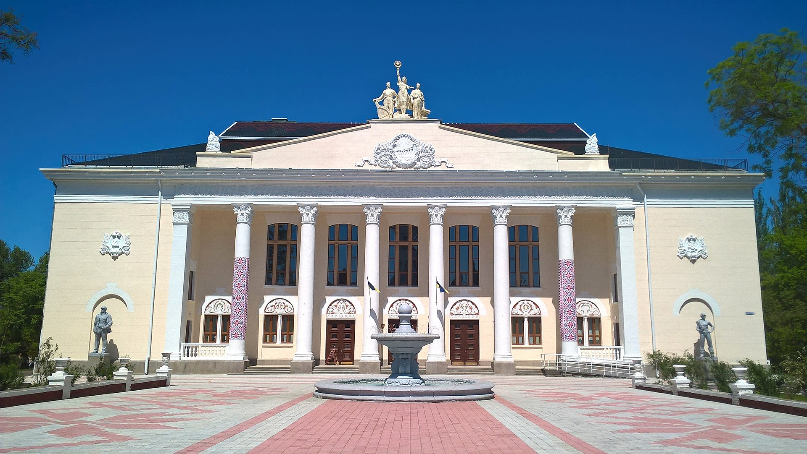

Перекопайко Кирило Андрійович
Місце народження : селище Веселе, 27лютого, 2003року
Школа: Веселівський ліцей
Університет: КПІ ім. Ігоря Сікорського
Хоббі
Фільми
- Доктор Стрендж
- Залізна людина
- Людина-павук :Додому шляху нема
Нова Каховка
Нова́ Кахо́вка — місто на півдні України. Адміністративний центр Новокаховської міської громади Каховського району Херсонської області. Засноване 28 лютого 1952 року. День міста традиційно відзначається в останню неділю вересня.
Місто утворене на 28 лютого 1952 року на місці села Ключове. Місто будувалося одночасно з будівництвом Каховської гідроелектростанції як містечко гідробудівників, мешканці якого з самого початку іменували населений пункт «Нова Каховка».
Назва швидко прижилася і згодом стала офіційною. Днем народження міста вважається день присвоєння йому Президією Верховної Ради УРСР назви Нова Каховка, тобто 28 лютого 1952 року
